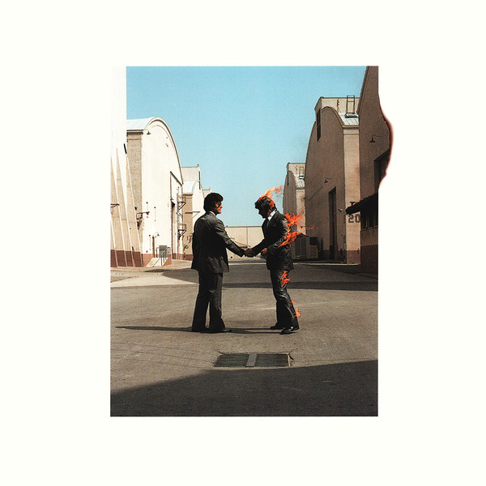

Abbey Road by The Beatles

This album is incredibly solid and well polished. Pretty self explanatory. The songs on side one are terrific and the Medley is pretty cool too. I try to skip "Your Majesty" though, as I prefer the climactic "The End"
Revolver by The Beatles
Beautiful album. Wonderfully experimental. Highlights are every song on it, but especially "Tomorrow Never Knows" for how experimental it is
"The Beatles" by The Beatles

Less cohesive than Revolver, but even more experimental. Extremely hit or miss, but a good listen nevertheless
Low by David Bowie
This album has a beautiful melancholy atmosphere on it. I love the slow ambient tracks on side two and the more upbeat electro tracks on side one that still have a bit of that somber edge to it. I also love the patterns on side one and how each part of the music feels independant and equally prioritized. "Always Crashing in the Same Car" and "Subterraneans" are the highlights.
Plastic Ono Band by John Lennon
Such a beautifully simple, honest album. God is an incredibly powerful track, and in the context of the Beatles, the most powerful track Lennon ever wrote in my opinion. A very powerful and incredible album, a masterpiece
Dark Side of the Moon by Pink Floyd

Needs no introduction. Completely self explanatory
Wish You Were Here by Pink Floyd
Really wonderful album. "Wish You Were Here" is oddly enough my least favorite track on the album. Your love of this album largely depends on how much you love "Shine On You Crazy Diamond." Seeing as how that song is in my top five favorite Floyd tracks, I absolutely adore this album
Meddle by Pink Floyd
I mostly love this album for side 2, which is my favorite Pink Floyd song of all time. Side one is decent too, but definitely carried by Echoes
The Velvet Underground and Nico by The Velvet Underground

A wonderfully experimental album. The combination of Viola drones, Nico's melodious vocals, and the harsh, rhythmic guitar makes it sound unlike any other. I like to quote Brian Eno on the albums' sales when promoting this album: "while the album initially only sold approximately 30,000 copies, everyone who bought one of those 30,000 copies started a band."
White Light White Heat by The Velvet Underground
Less varied than their debut but nevertheless incredible, "White Light White Heat" is an album I hated for the longest time. Pretty soon, I grew to appreciate the experimental songs and the bold decision to make a noisy, harsh sounding album